5/26/1941--2/ /1989

John was special to so many people, but to me he will always be the big brother that was there for me when I needed him. I remember our growing up when we enjoyed hunting for all the baskets our parents would hide for us on Easter. He taught me how to ride my first bike and taught me how to drive my dad's standard car. Of course he spent a lot of time yelling at me in the process, but that was just his way sometimes of getting his point across.
John always loved to be building model airplanes and boats, and in high school he built a boat in shop class. My parents were so proud of him that he was able to a talk my dad into letting him build a boat in our dining room. It was quite a production, the only problem was he did not measure it correctly, and when he had completed the boat it was too large to get through the doorway. He had to dismantle a part of the boat to get it out of the house. It was only natural that when he went in service he chose the Navy so he could be on the sea. When he got out of the Navy and came home, he enjoyed many summers on the lake with his boat and friends.
John loved playing his electric guitar, and on several occasions the neighbors would call and ask if John could turn down his amplifier a bit. He would bring his guitar down to the dining room to play, and I would be on the piano making what we thought was great music, while my poor father would be trying to listen to his baseball game in the living room. It was a lively household with John around.
John was great with children and loved playing with his friend's children. He also loved animals. We always had a pet in our household, and he was like a big kid in playing with them. As we got older, John was always there to help with the care of our elderly mother. He had such a special relationship of caring and understanding towards mom. I remember at Christmas, John always seemed to come up with just the right gift for her.
It was a terrible loss to all of us when John lost his battle with lung cancer. I will be forever grateful to all the many people who were so supportive during those last six months. Dr. Decker and the nurses made him as comfortable as possible. Bunk made special meals for John, and Sibby and Rocky and all his many friends were so faithful in their visits and support.
I hope these family photos of John will help keep his memory alive and bring some joy to those of you who were a part of his life.
JOHN BUCKLEY AND FAMILY PHOTOS
Mary
 John Buckley was a true friend for many years. John was part sinner, part saint, part comedian and part wise councelor to anyone with a problem. His honesty and genuine concern for the welfare of others combined with his offbeat sense of humor made a great mix for a great friend.
John Buckley was a true friend for many years. John was part sinner, part saint, part comedian and part wise councelor to anyone with a problem. His honesty and genuine concern for the welfare of others combined with his offbeat sense of humor made a great mix for a great friend. John had the potential to do anything he put his mind to but his love of the area, especially the Saranac Lake chain of lakes, which he literally knew every inch of, kept him here in the village he loved.
John, Rocky Piro, and I were known locally as "The Three Musketeers" and whether we were touring the lakes or touring the village, John kept us laughing and enjoying the moment. To this day, whenever Rocky and I go "out on the town", we inevitably raise a Bud (or two) to the "absent musketeer".
"Barfly" would like that!
--BUNK--

In Memory of Edith M. Cole March 26,1923-December 3,2006 I'd like the memory of me to be a happy one. I'd like to leave an afterglow of smiles when the day is gone. I'd like to leave an echo whispering softly down the ways, Of happy times, and laughing times, and bright and sunny days. I'd like the tears of those who grieve to dry before the sun, Of happy memories that I leave when life is done. In loving memory of our mother, from all your children.
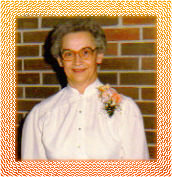
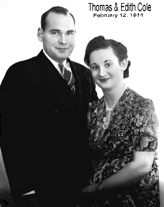
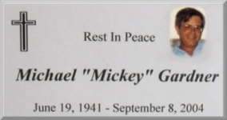
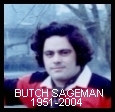
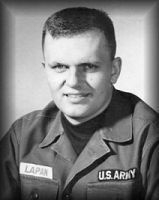
Richard Chapman LaPan October 1, 1941 - January 7, 2005
Son of Roslyn and George H. Lapan
Predeceased in 1994 by his wife, Cathy
Survived by his son, Varden, of Juneau, Alaska
Remembered by all who knew him.
GEORGE N. FOUNTAIN-November 15, 1912-August 31, 2004
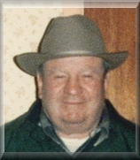
George Fountain...Adirondack guide, logger, campsite caretaker, and Grandfather of 15, Great-Grandfather of 17...
My Grandfather wasn't the tallest of men but he was one of the "biggest".
His smile could light up a room, his laughter was contagious. His courage and strength were beyond measure but so were his sensitivity and devotion.
He didn't have to speak loud or long to say a great deal. The twinkle in his eye or a sentimental tear often said it all.
Grampa knew where his grandchildren and his great-grandchildren went to school, what they drove, and knew many of their friends as his own.
He liked hunting, fishing, racing, talking about politics, ball games, predicting the weather, inspecting our tires (with a swift kick) and checking our mileage!
Last week Grampa reminded me what great dancers he and Granny were together but he added, "It's your Grandmother that can really dance. She's quite the woman you know." His love, pride, and concern for her were immense.
George Fountain was quite the man whether he realized it or not because in his dance through life he became a legend in his own right. He gave to us a knowledge beyond written words and a legacy of love that will remain with us always.
Think of him often and smile...
--Glenda--
BARBARA E. LAMAY-November 26, 1942--April, 2, 2004
A loving nurse, mother, grandmother and always a true friend.
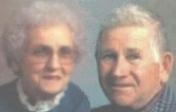
IN LOVING MEMORY OF ART AND SYLVIA CHARLAND
Arthur J. Charland Sr.- March 18, 1916 - February 8, 2003
Sylvia A. Charland - May 13, 1918 - March 31, 2004
Ed Fobare 11/13/1997
Ed (Papa) is loved and missed very much each day...by all who knew
him, but especially by his daughter Pat, her sons Louis and Jon and
her husband Jon. Mary (Ed's wife) is in Lake Placid at the Mercy
Center. She loved him so much. He was a wonderful father, husband and
friend. A true gift to us all.
Patricia Fobare Erickson,DVM
CAROL ANN (MURRAY) GLADD 1939-1971
Carol was called away in the prime of her life but her love will live on forever in the hearts of her children, Monty, Maureen, Mary, Marcia, Janet, John, and all her friends and family.
Clara Walter Daniels (91) died October 8, 2003. She will be missed terribly
by my brother, Bucky, and myself. We couldn't have had a better mother if we
had picked her out ourselves; and in the 60's she was known as "mom" to all
of our friends. There was always room at the table for more and she enjoyed
every moment that the house was full of kids. God bless her and all of her
memories.
Donna Walter Wright
Richard T. Cole May 18,1945 - March 23,2001
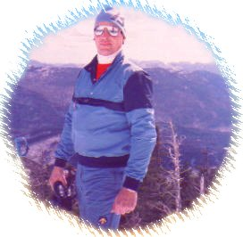
A beautiful life that came to an end, he died as he lived, everyone's friend. In our hearts a memory will always be kept, of one we loved, and will never forget. In loving memory of our brother.
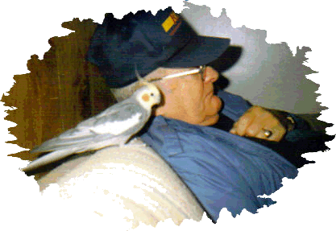
BERNARD J. MOODY died on Wednesday December 17,2003 at 1:30 a.m. in the
Adirondack Medical Center Hospital. He always cared about other people
more than himself.
My Papa, Bernard J. Moody, was a father, brother, friend, grandfather and he
was a son.
I want everybody to know Papa is in Heaven watching over us. He is in a
better place and he is not going through any pain any more.
I hope Papa is in Heaven fishing and hunting with Grandpa Charley and also with my
Dad, Jeff Scott LaVair.
My mother, Mary Taylor, did everything she could
to help him survive but he only had one lung and that one gave out.
So Papa Moody shall "Rest In Peace" with all of his loved ones.
By Justine LaVair(granddaughter-age 11)
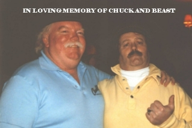
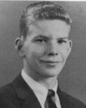
PAT LATOUR, SLHS class of 1960 died December 21, 2002
F.BAILEY ANDERSON -1944-2002
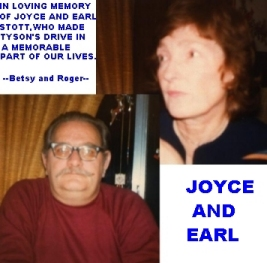
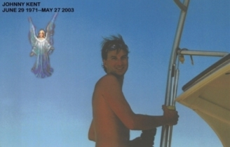
I know Our Father sent his angels for you much too soon but I know our memories will help heal our pain and mend our broken hearts. We will love you and miss you forever. You were the best son and brother we could ever have had.
--Love,
Mom and Angie--
John Thomas Flynn June 6, 1943-April 21,2002 I lost a wonderful friend the day God took you home. Your memory and smile will live on in my heart forever. Barbara
Sandra (Kunath) Duso August 30th 2002. We will never forget you. With love forever. Anne (Kunath) Scheefer.
In loving memory of Curtis K. Tyler(39) March 16, 2002
Curt touched many lives in his short time on earth. He will always be
remembered for his willingness to help others,especially the young
people of Vermontville, and his great sense of humor. Curt never gave
up, he fought to live his life to the fullest. He will be remembered and
truly missed by his many friends and family.
Phyllis B. DeFuria (81) May 30, 2001
"The most wonderful person in the world you could every possibly meet. She was the quintessential grandmother, the best, most perfect woman. I only hope that I can be half the woman she was. I miss her every day and hope
she knows how much I love her."--
Tracy Lynn DeFuria-Mauler
RAYMOND WOOD Nov. 28, 1998
"Thanks for being my Dad. Love, Judy."
GEORGE FARRELL May 19, 2001
"We all loved him so much, Everyone who knew him did. He encouraged everyone, and he was kind and wise and fun to be around. George knew how to love people unconditionally, and he did. His wonderful art of story telling will long be remembered; he was creative, intelligent, sensitive and genuine.....No words can do him justice or express the loss we feel and how much we miss him."
Anne
SARA I GRIFFIN (80)- AUGUST 29, 1999
"Sara will be loved and remembered forever by her children, grandchildren, great-grandchildren and all who were fortunate enough to have known her. Her quick wit, perceptive wisdom and her quiet, thoughtful manner will never be forgotten."
HARRY LEON STARKEY - APRIL 28, 2000 - 71 YEARS OLD
"To our beloved husband, father, and grandfather: We will miss you dearly
and will keep you forever in our hearts. Remembering your sense of humor
will always make us chuckle."
SUSAN K. McNAMARA- January, 10 2001-56
"Sue will remain in the memories of her family and friends. I personally
fondly recall the good times we had during those wild days of motor cycles and fast boats
on the Saranac Lakes in the sixties. We will all miss her."
WE WILL MISS THEM ALL